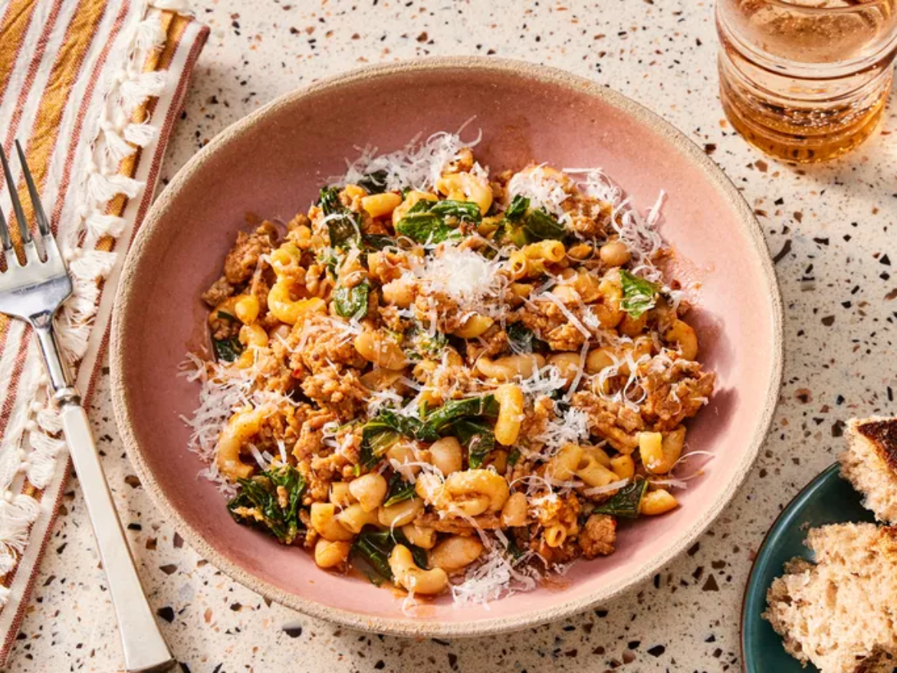

Back to Homepage
Pasta Fazool (Pasta e Fagioli)

Description
Pasta fazool is a classic Italian-American comfort food. This recipe works with any sausage, but I like the fennel and anise flavors of sweet Italian sausage
with the beans. A hearty soup that's fast and easy to put together. This recipe makes enough for two large portions or four smaller ones.
Ingredients
- 1 tablespoon olive oil
- 12 ounces sweet bulk italian sausage
- 1 stalk celery, diced
- 1/2 yellow onion, chopped
- 1/4 cup dry elbow macaroni
- 1/4 cup tomato paste
- 3 cups chicken broth, or more as needed, divided
- 1/4 teaspoon crushed red pepper flakes, or to taste
- 1/4 teaspoon dried oregano
- Salt and freshly ground black pepper to taste
- 3 cups chopped swiss chard
- 1 (15 ounce) can cannellini (white kidney) beans, drained
- 1/4 cup grated parmigiano-reggiano cheese, plus additional for serving, or to taste
Directions
- Gather the ingredients.
- Heat oil in a skillet over medium-high heat. Cook and stir sausage in the hot skillet until browned and crumbly, about 5 minutes. Reduce heat
to medium. Add diced celery and chopped onion. Cook until onions are translucent, 4 to 5 minutes. Add dry pasta; cook and stir for 2 minutes
- Stir in tomato paste until evenly distributed, 2 to 3 minutes. Pour in 3 cups broth; increase heat to high and bring to a boil. Stir in red pepper
flakes, oregano, salt, and pepper. Reduce heat to medium and let simmer, stirring often, for about 5 minutes. Add more broth if needed.
- Place chopped chard in a bowl. Cover with cold water and rinse leaves; any grit will fall to the bottom of the bowl. Transfer chard to a colander
to drain briefly; add to soup. Cook and stir until leaves wilt, 2 to 3 minutes.
- Stir in white beans; continue cooking and stirring until pasta is tender, 4 to 5 minutes. Remove from heat and stir in grated cheese. Serve
topped with additional grated cheese.
- Enjoy!